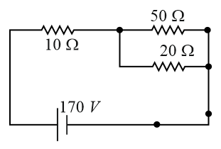
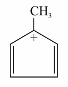
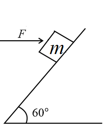

⚡ Wave Optics
58
Total Questions
5
Years
3
Clusters
Question Clusters
PHY-WAVEOPTI-YDSE_INTERFERENCE
Wave Optics: Young's Double Slit Experiment (YDSE)
PHY-WAVEOPTI-POLARIZATION_BREWSTER
Wave Optics: Polarization, Brewster's Law & Malus's Law
PHY-WAVEOPTI-DIFFRACTION_SINGLE_SLIT
Wave Optics: Single Slit Diffraction
Year-wise Frequency
| Year | Questions | Frequency |
|---|---|---|
| 2021 | 15 | |
| 2022 | 9 | |
| 2023 | 15 | |
| 2024 | 18 | |
| 2025 | 1 |
Questions
Showing first 50 of 58 questions.
Q25 (2021 Shift 2)
The width of one of the two slits in a Young's double slit experiment is three times the other slit. If the amplitude of the light coming from a slit is proportional to the slit-width, the ratio of minimum to maximum intensity in the interference pattern is 𝑥: 4 where 𝑥 is _______ .

Answer:
1PHY-2021-0101-S2-Q025
Q27 (2021 Shift 1)
A fringe width of 6 mm was produced for two slits separated by 1 mm apart. The screen is placed 10 m away. The wavelength of light used is x nm . The value of x to the nearest integer is ______.
Answer:
600PHY-2021-0101-S1-Q027
Q15 (2021 Shift 1)
In Young's double slit arrangement, slits are separated by a gap of 0. 5 mm , and the screen is placed at a distance of 0. 5 m from them. The distance between the first and the third bright fringe formed when the slits o are illuminated by a monochromatic light of 5890 A is :-
PHY-2021-0101-S1-Q015
Q17 (2021 Shift 1)
In a Young's double slit experiment, the width of the one of the slit is three times the other slit. The amplitude of the light coming from a slit is proportional to the slit-width. Find the ratio of the maximum to the minimum intensity in the interference pattern.
PHY-2021-0101-S1-Q017
Q28 (2021 Shift 1)
An unpolarized light beam is incident on the polarizer of a polarization experiment and the intensity of light beam emerging from the analyzer is measured as Lumens. Now, if the analyzer is rotated around the 100 horizontal axis (direction of light) by 30° in clockwise direction, the intensity of emerging light will be _______Lumens.

Answer:
75PHY-2021-0101-S1-Q028
Q15 (2021 Shift 2)
If the source of light used in a Young's double slit experiment is changed from red to violet:
PHY-2021-0101-S2-Q015
Q15 (2021 Shift 1)
Two coherent light sources having intensity in the ratio 2x produce an interference pattern. The ratio Imax−Imin Imax+Imin will be
PHY-2021-0101-S1-Q015
Q14 (2021 Shift 2)
Consider the diffraction pattern obtained from the sunlight incident on a pinhole of diameter 0. 1 μm. If the diameter of the pinhole is slightly increased, it will affect the diffraction pattern such that
PHY-2021-0101-S2-Q014
Q14 (2021 Shift 1)
In the Young's double slit experiment, the distance between the slits varies in time as 𝑑𝑡= 𝑑0 + 𝑎0 sin𝜔𝑡; where 𝑑0, 𝜔 and 𝑎0 are constants. The difference between the largest fringe width and the smallest fringe width obtained over time is given as: 2𝜆𝐷𝑑0 2𝜆𝐷𝑎0
PHY-2021-0101-S1-Q014
Q29 (2021 Shift 1)
White light is passed through a double slit and interference is observed on a screen 1. 5 m away. The separation between the slits is 0. 3 mm . The first violet and red fringes are formed 2. 0 mm and 3. 5 mm away from the central white fringes. The difference in wavelengths of red and violet light is (in nm). 104t)
Answer:
300PHY-2021-0101-S1-Q029
Q29 (2021 Shift 2)
A source of light is placed in front of a screen. The intensity of light on the screen is I . Two Polaroids P1 and P2 are so placed in between the source of light and screen that the intensity of light on the screen is I . Then 2 the P2 , should be rotated by an angle of (degrees) so that the intensity of light on the screen becomes 3I . 8

Answer:
30PHY-2021-0101-S2-Q029
Q18 (2021 Shift 1)
In a Young's double slit experiment two slits are separated by 2 mm and the screen is placed one meter away. When a light of wavelength 500 nm is used, the fringe separation will be :
PHY-2021-0101-S1-Q018
Q17 (2021 Shift 2)
The light waves from two coherent sources have same intensity I1 = I2 = I0. In interference pattern the intensity of light at minima is zero. What will be the intensity of light at maxima?
PHY-2021-0101-S2-Q017
Q18 (2021 Shift 1)
In Young's double slit experiment, if the source of light changes from orange to blue then:
PHY-2021-0101-S1-Q018
Q28 (2021 Shift 2)
In a Young's double slit experiment, the slits are separated by 0 . 3 mm and the screen is 1 . 5 m away from the plane of slits. Distance between fourth bright fringes on both sides of central bright fringe is 2 . 4 cm . 1014 The frequency of light used is 𝑥× Hz .
Answer:
5PHY-2021-0101-S2-Q028
Q28 (2022 Shift 1)
Sodium light of wavelengths 650 nm and 655 nm is used to study diffraction at a single slit of aperture 0. 5 mm . The distance between the slit and the screen is 2. 0 m . The separation between the positions of the ×10−5 first maxima of diffraction pattern obtained in the two cases is _____ m
Answer:
3PHY-2022-0101-S1-Q028
Q16 (2022 Shift 1)
The two light beams having intensities 𝐼 and 9𝐼 interfere to produce a fringe pattern on a screen. The phase 𝜋 difference between the beams is 2 at point 𝑃 and 𝜋 at point 𝑄. Then the difference between the resultant intensities at 𝑃 and 𝑄 will be :
PHY-2022-0101-S1-Q016
Q17 (2022 Shift 1)
Given below are two statements : Statement I : Davisson-Germer experiment establishes the wave nature of electrons. Statement II : If electrons have wave nature, they can interfere and show diffraction. In the light of the above statements choose the correct answer from the option given below :
PHY-2022-0101-S1-Q017
Q15 (2022 Shift 2)
The interference pattern is obtained with two coherent light sources of intensity ratio 4: 1. And the ratio 𝐼max + 𝐼min is 5 𝑥. Then, the value of 𝑥 will be equal to : 𝐼max - 𝐼min
PHY-2022-0101-S2-Q015
Q28 (2022 Shift 1)
In Young's double slit experiment the two slits are 0. 6 mm distance apart. Interference pattern is observed on a screen at a distance 80 cm from the slits. The first dark fringe is observed on the screen directly opposite to one of the slits. The wavelength of light will be _____ nm .
Answer:
450PHY-2022-0101-S1-Q028
Q16 (2022 Shift 2)
In young's double slit experiment performed using a monochromatic light of wavelength λ , when a glass plate (μ = 1. 5) of thickness xλ is introduced in the path of the one of the interfering beams, the intensity at the position where the central maximum occurred previously remains unchanged. The value of x will be
PHY-2022-0101-S2-Q016
Q28 (2022 Shift 2)
In a Young's double slit experiment, an angular width of the fringe is 0. 35° on a screen placed at 2 m away for particular wavelength of 450 nm . The angular width of the fringe, when whole system is immersed in a medium of refractive index 7 , is 1 . The value of α is _____ . 5 α
Answer:
4PHY-2022-0101-S2-Q028
Q17 (2022 Shift 1)
Using Young's double slit experiment, a monochromatic light of wavelength 5000Å produces fringes of fringe width 0. 5 mm . If another monochromatic light of wavelength 6000Å is used and the separation between the slits is doubled, then the new fringe width will be
PHY-2022-0101-S1-Q017
Q27 (2022 Shift 2)
In a double slit experiment with monochromatic light, fringes are obtained on a screen placed at some distance from the plane of slits. If the screen is moved by 10−2 towards the slits, the change in fringe width is 5 × m 3 × 10−3 cm . If the distance between the slits is 1 mm , then the wavelength of the light will be____ nm .

Answer:
600PHY-2022-0101-S2-Q027
Q16 (2023 Shift 1)
‘𝑛’ polarizing sheets are arranged such that each makes an angle 45° with the proceeding sheet. An unpolarized light of intensity is incident into this arrangement. The output intensity is found to be 𝐼 . The 𝐼 64 value of 𝑛 will be:
PHY-2023-0101-S1-Q016
Q27 (2023 Shift 2)
A beam of light consisting of two wavelengths 7000 A and 5500 A is used to obtain interference pattern in Young's double slit experiment. The distance between the slits is 2. 5 mm and the distance between the plane of slits and the screen is 150 cm . The least distance from the central fringe, where the bright fringes due to both the wavelengths coincide, is n × 10–5 m . The value of n is _____.
Answer:
20PHY-2023-0101-S2-Q027
Q25 (2023 Shift 2)
The width of fringe is 2 mm on the screen in a double slit experiment for the light of wavelength of 400 nm . The width of the fringe for the light of wavelength 600 nm will be: (1) 4 mm (2) 2 mm (3) 1. 33 mm (4) 3 mm
Answer:
6PHY-2023-0101-S2-Q025
Q29 (2023 Shift 1)
Unpolarised light of intensity m−2 passes through the combination of three polaroids such that the 32 W pass axis of the last polaroids is perpendicular to that of the pass axis of first polaroids. If intensity of emerging light is 3 W m−2, then the angle between pass axis of first two polaroids is _________°.
Answer:
30PHY-2023-0101-S1-Q029
Q15 (2023 Shift 2)
The ratio of intensities at two points P and Q on the screen in a Young's double slit experiment where phase π π difference between two waves of same amplitude are and 2, respectively are
PHY-2023-0101-S2-Q015
Q17 (2023 Shift 2)
In a Young’s double slit experiment, the ratio of amplitude of light coming from slits is 2 : 1. The ratio of the maximum to minimum intensity in the interference pattern is
PHY-2023-0101-S2-Q017
Q17 (2023 Shift 1)
A single slit of width a is illuminated by a monochromatic light of wavelength 600 nm . The value of a for which first minimum appears at 30o on the screen will be : θ =
PHY-2023-0101-S1-Q017
Q25 (2023 Shift 1)
In 5th Young's double slits experiment, the position of bright fringe from the central maximum is 5 cm . The distance between slits and screen is 1 m and wavelength of used monochromatic light is 600 nm . The separation between the slits is: (1) μm (2) μm 60 48 (3) 12 μm (4) 36 μm
Answer:
18PHY-2023-0101-S1-Q025
Q23 (2023 Shift 1)
In a Young’s double slit experiment, two slits are illuminated with a light of wavelength 800 nm . The line joining A1P is perpendicular to A1A2 as shown in the figure. If the first minimum is detected at P , the value of slits separation will be : a The distance of screen from slits . D = 5 cm (1) 0. 4 mm (2) 0. 5 mm (3) 0. 2 mm (4) 0. 1 mm

Answer:
40PHY-2023-0101-S1-Q023
Q24 (2023 Shift 1)
As shown in figures, three identical polaroids P1 , P2 and P3 are placed one after another. The pass axis of P2 and P3 are inclined at angle of 60º and 90º with respect to axis of P1 . The source S has an intensity of 256 W m−2 . The intensity of light at point is _____ W m−2 . O
Answer:
28PHY-2023-0101-S1-Q024
Q28 (2023 Shift 1)
In Young’s double slit experiment, two slits 𝑆1 and 𝑆2 are 𝑑 distance apart and the separation from slits to screen is (as shown in figure). Now if two transparent slabs of equal thickness but refractive 𝐷 0 . 1 mm index 1 . 51 and 1 . 55 are introduced in the path of beam λ = 4000 Å from 𝑆1 and 𝑆2 respectively. The central bright fringe spot will shift by ________ number of fringes.
Answer:
10PHY-2023-0101-S1-Q028
Q24 (2023 Shift 2)
In a Young’s double slit experiment, the intensities at two points, for the path difference λ 4 and λ 3 ( λ being the wavelength of light used) are I1 and I2 respectively. If I0 denotes the intensity produced by each one of the individual slits, then I1+I2 = ______ . I0

Answer:
313PHY-2023-0101-S2-Q024
Q15 (2023 Shift 1)
Two polaroids 𝐴 and 𝐵 are placed in such a way that the pass-axis of polaroids are perpendicular to each other. Now, another polaroid 𝐶 is placed between 𝐴 and 𝐵 bisecting angle between them. If intensity of unpolarised light is 𝐼0 then intensity of transmitted light after passing through polaroid 𝐵 will be :
PHY-2023-0101-S1-Q015
Q16 (2023 Shift 1)
Given below are two statements: One is labelled as Assertion A and the other is labelled as Reason R Assertion A : The beam of electrons shows wave nature and exhibit interference and diffraction. Reason R : Davisson Germer Experimentally verified the wave nature of electrons. In the light of the above statements. Choose the most appropriate answer from the options given below :
PHY-2023-0101-S1-Q016
Q25 (2023 Shift 2)
Two light waves of wavelengths 800 and 600 nm are used in Young's double slit experiment to obtain interference fringes on a screen placed 7 m away from plane of slits. If the two slits are separated by 0. 35 mm , then shortest distance from the central bright maximum to the point where the bright fringes of the two wavelength coincide will be ______ mm .
Answer:
20PHY-2023-0101-S2-Q025
Q29 (2024 Shift 2)
In Young's double slit experiment, monochromatic light of wavelength 5000 A ∘ is used. The slits are 1 . 0 mm apart and screen is placed at 1 . 0 m away from slits. The distance from the centre of the screen where intensity becomes half of the maximum intensity for the first time is ______ 10-6 × m .
Answer:
125PHY-2024-0101-S2-Q029
Q29 (2024 Shift 1)
Two wavelengths λ1 and λ2 are used in Young's double slit experiment. λ1 = 450 nm and λ2 = 650 nm . The minimum order of fringe produced by λ2 which overlaps with the fringe produced by λ1 is n . The value of n is _____.
Answer:
9PHY-2024-0101-S1-Q029
Q16 (2024 Shift 2)
The width of one of the two slits in a Young's double slit experiment is 4 times that of the other slit. The ratio of the maximum of the minimum intensity in the interference pattern is:
PHY-2024-0101-S2-Q016
Q29 (2024 Shift 1)
In Young's double slit experiment, carried out with light of wavelength 5000\AA , the distance between the slits is 0.3 mm and the screen is at 200 cm from the slits. The central maximum is at x = 0 cm . The value of x for third maxima is _____ mm .
Answer:
10PHY-2024-0101-S1-Q029
Q29 (2024 Shift 2)
In a single slit experiment, a parallel beam of green light of wavelength 550 nm passes through a slit of width 0.20 mm . The transmitted light is collected on a screen 100 cm away. The distance of first order minima from the central maximum will be x × 10−5 m . The value of x is :
Answer:
275PHY-2024-0101-S2-Q029
Q17 (2024 Shift 1)
Which of the following phenomena does not explain by wave nature of light. A. reflection B. diffraction C. photoelectric effect D. interference E. polarization Choose the most appropriate answer from the options given below:
PHY-2024-0101-S1-Q017
Q29 (2024 Shift 2)
Two coherent monochromatic light beams of intensities I and 4I are superimposed. The difference between maximum and minimum possible intensities in the resulting beam is xI . The value of x is $_________.
Answer:
8PHY-2024-0101-S2-Q029
Q29 (2024 Shift 1)
A parallel beam of monochromatic light of wavelength 600 nm passes through single slit of 0.4 mm width. Angular divergence corresponding to second order minima would be ______ ×10−3rad .
Answer:
6PHY-2024-0101-S1-Q029
Q29 (2024 Shift 2)
Two slits are 1 mm apart and the screen is located 1 m away from the slits. A light of wavelength 500 nm is used. The width of each slit to obtain 10 maxima of the double slit pattern within the central maximum of the single slit pattern is _____ ×10−4 m
Answer:
2PHY-2024-0101-S2-Q029
Q29 (2024 Shift 1)
In a Young's double slit experiment, the intensity at a point is ( 1 )th of the maximum intensity, the minimum 4 distance of the point from the central maximum is ________ μm . (Given : λ = 600 nm, d = 1.0 mm, D = 1.0 m )
Answer:
200PHY-2024-0101-S1-Q029
Q30 (2024 Shift 2)
Monochromatic light of wavelength 500 nm is used in Young's double slit experiment. An interference pattern is obtained on a screen. When one of the slits is covered with a very thin glass plate (refractive index = 1.5 ), the central maximum is shifted to a position previously occupied by the 4th bright fringe. The thickness of the glass-plate is ______ μm .
Answer:
4PHY-2024-0101-S2-Q030